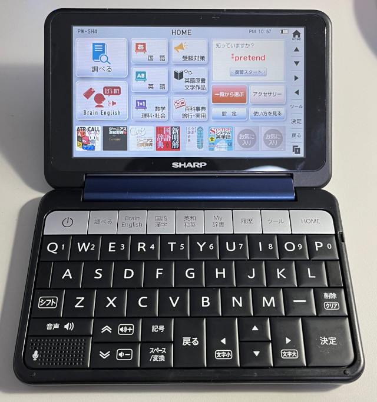
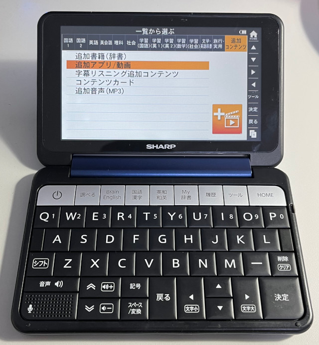
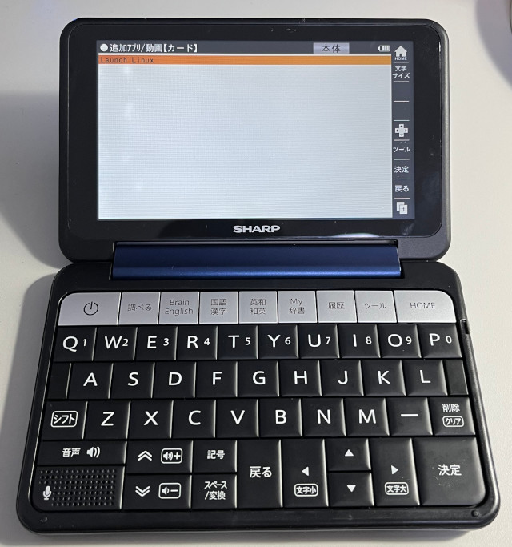
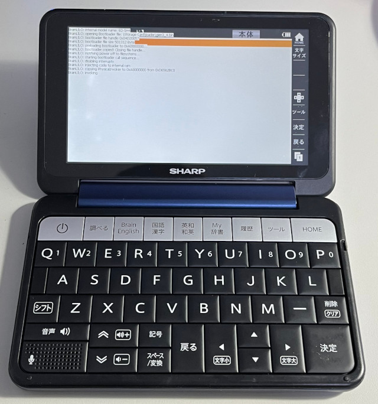
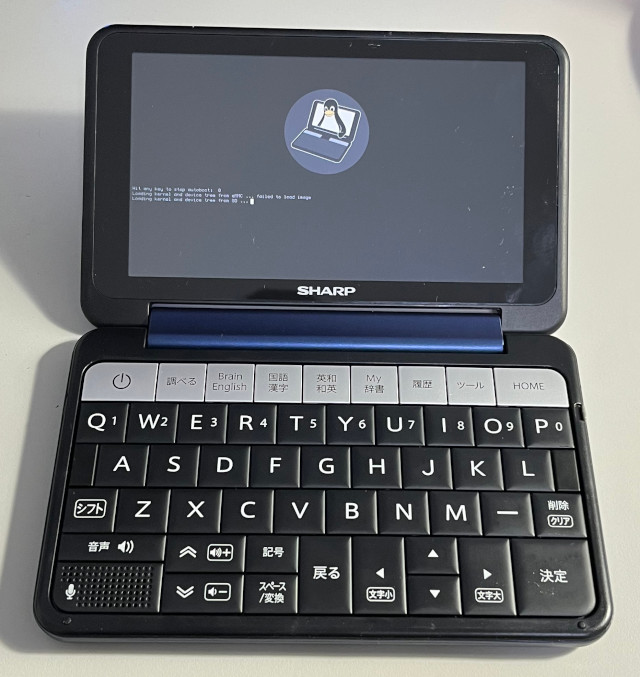
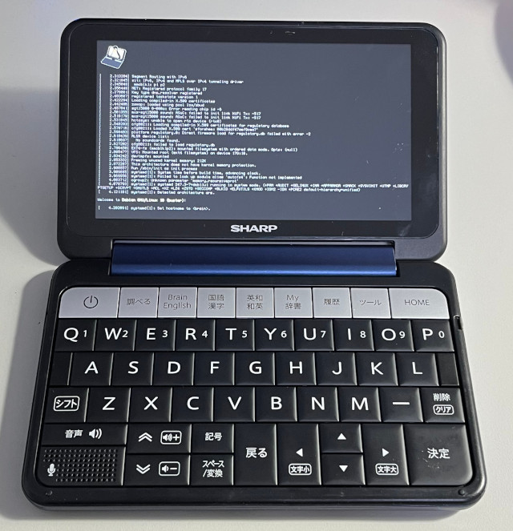
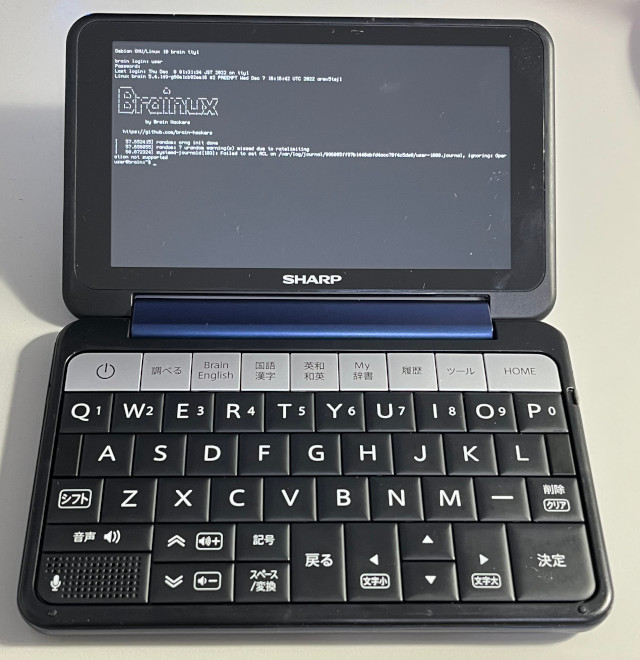
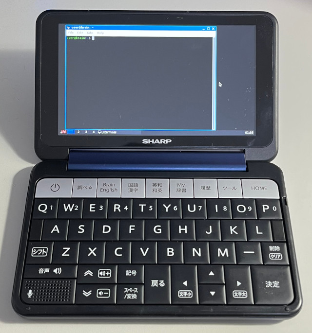

參考資訊：
https://brainux.org/
Brainux是一套可以跑在Sharp Brain翻譯機上的Linux系統，目前支援蠻多Sharp Brain機種，啟動Linux系統的方式，可以進入官方系統(Windows Embedded CE)後，再去啟動Linux系統，而製作Linux系統的方式也相當簡單，只要將燒錄檔案Clone到MicroSD就可以，步驟如下：
$ cd $ wget https://github.com/brain-hackers/buildbrain/releases/download/2022-12-08-010450/sdimage-2022-12-08-010450.zip $ unzip sdimage-2022-12-08-010450.zip $ sudo dd if=sdimage-2022-12-08-010450.img of=/dev/sdX bs=1M
進入系統後，選擇一覽







